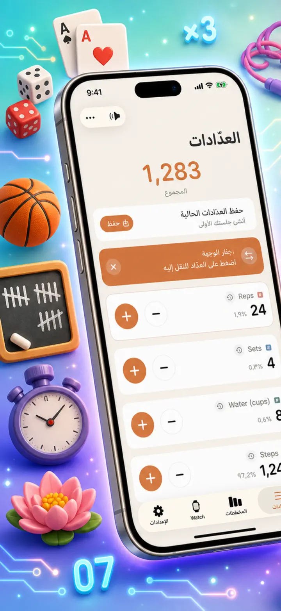
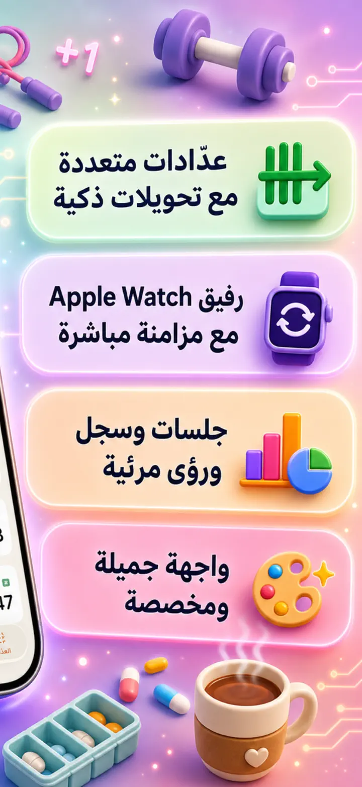
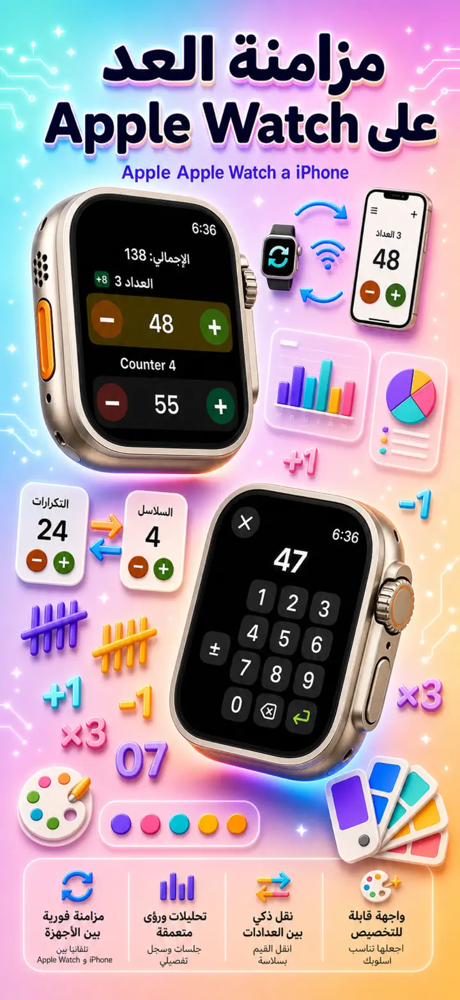
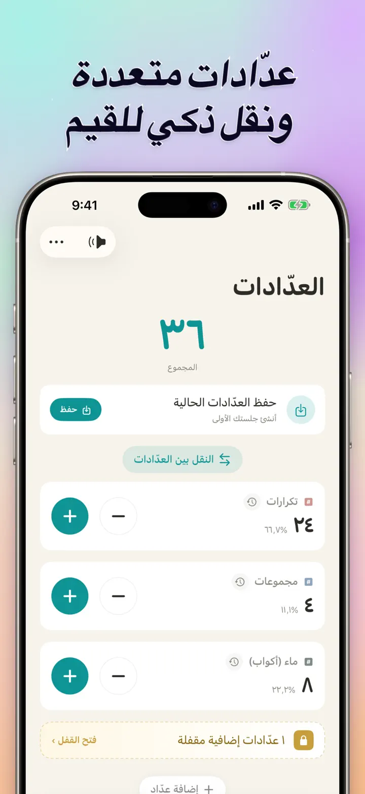
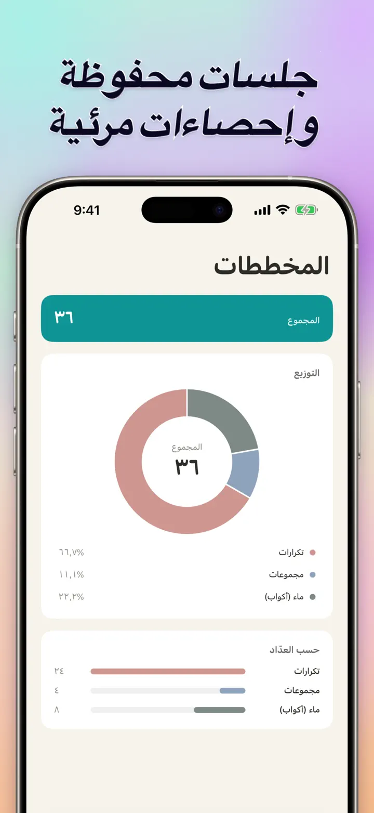
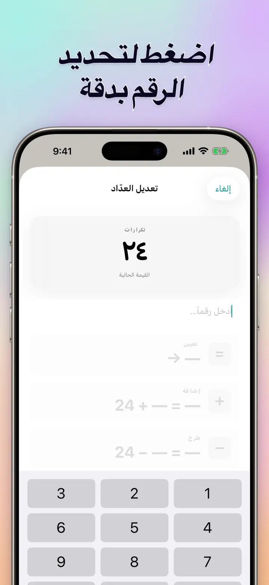
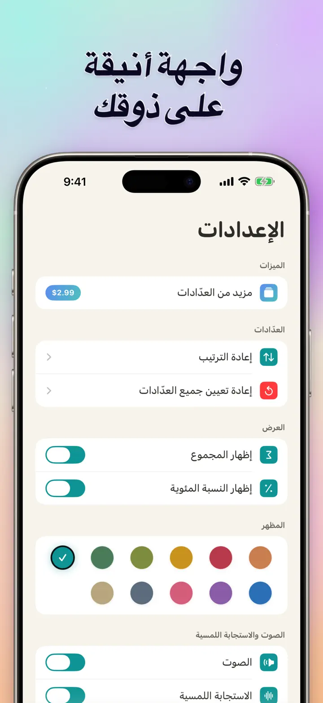
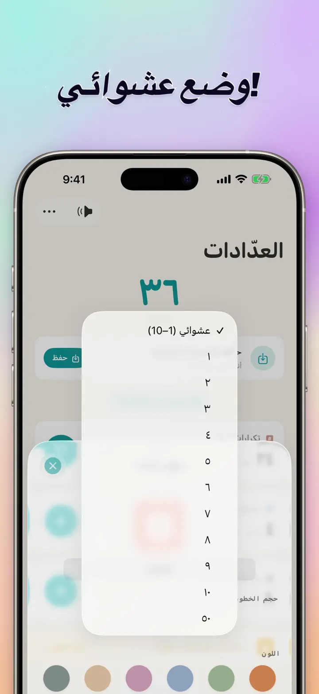

عدّاد 123
مزامنة Watch، كليكر، نقاط
جديد: عناصر واجهة للشاشة الرئيسية — المس +/- على العنصر دون فتح التطبيق. عدّاد وكليكر مع مزامنة Apple Watch، وضع عشوائي، رسوم وسجل.
تنزيل من App Store
حول التطبيق
عدّاد 123 هو العداد السريع والمرن لـ iPhone وiPad وApple Watch. سمِّ كل عداد، اختر لونه، واحسب أي شيء — تكرارات الجيم، صفوف الحياكة، المسبحة، نقاط الصف، الجرد، نتائج الألعاب. كل شيء يبقى محلياً على جهازك ويعمل بدون إنترنت.
عدادات مخصصة
- أنشئ عدادات منفصلة للأنشطة، الألعاب، الروتين أو القوائم
- اسم ولون مخصصان لكل عداد
- اسحب لإعادة الترتيب
- اضغط مطولاً للعدّ السريع المتتالي
- يعمل بالكامل دون اتصال — بلا تسجيل، بلا سحابة
إدخال مباشر وعمليات جماعية
- اضغط على العداد لتعيين قيمة ابتدائية مباشرة — دون الحاجة للتصفير
- تعديل جماعي بالإضافة/الطرح: غيّر أي عداد بأي رقم بلمسة واحدة
- نقل: انقل قيمة من عداد إلى آخر دون عمليتين مزدوجتين
- خطوة مخصصة: لمسة واحدة تضيف 1 أو 5 أو 10 أو 100 أو ما تختاره
- معاينة مباشرة لكل تغيير
الوضع العشوائي
- اجعل كل ضغطة تولّد رقماً جديداً من 1 إلى 10
- أضف أو اطرح قيماً عشوائية حسب الزر الذي تضغطه
- مناسب للتدريبات، الألعاب، مكافآت الصف، والتحديات اليومية
- تُسجّل كل ضغطة عشوائية في سجل العداد
المجاميع والرسوم
- المجموع الكلي لكل العدادات بنظرة واحدة
- عرض النسب المئوية: مساهمة كل عداد في الإجمالي
- رسم بياني شريطي تفاعلي — بدّل بين القيمة (#) والنسبة (%)
- فرز حسب القيمة لترتيب فوري
السجل والمشاركة
- سجل كامل: كل إضافة وطرح وتعديل مسجّل
- احفظ مجموعات العدادات وحمّلها لاحقاً في لحظة
- شارك الإعدادات مع الفريق أو الطلاب أو الأصدقاء
مزامنة مباشرة مع APPLE WATCH
- عدّل على iPhone أو Apple Watch وستبقى القيم متزامنة
- تطبيق watchOS أصلي بالكامل — ليس مجرد مرافق
- الأسماء والألوان والقيم متزامنة على معصمك
- اضغط للعدّ، اضغط مطولاً للتكرار — مباشرة من الساعة
- يعمل باستقلال عندما لا يكون iPhone قريباً
لـ iPhone وiPad وApple Watch
- تخطيطات متكيفة مع كل أحجام الشاشات
- iPad يعرض عدادات أكثر في نفس الوقت، مع دعم Split View
- الخصوصية أولاً: تخزين محلي، بلا سحابة، بلا حساب
مثالي لـ
- المجموعات والتكرارات في الجيم
- صفوف الحياكة وغُرز الكروشيه
- المسبحة والتسبيح والأذكار
- نقاط الصف والحضور
- كرة السلة، الطائرة، اليد، القدم — نتيجة سريعة
- تنس الطاولة
- الجرد وحصر المخزون
- ألعاب الطاولة، البلوت، الكوتشينة، الدومينو
- لفّات المسبح والمضمار
- رصد الطيور
- عدّ الحضور في الفعاليات
- متابعة العادات والأهداف
حمّل عدّاد 123 واجعل كل عمليات العدّ سهلة — واضحة، سريعة، خاصة.
سياسة الخصوصية: https://masawata.net/privacy-policy.html شروط الاستخدام: https://www.apple.com/legal/internet-services/itunes/dev/stdeula/
لقطات الشاشة







عدّاد 123
جديد: عناصر واجهة للشاشة الرئيسية — المس +/- على العنصر دون فتح التطبيق. عدّاد وكليكر مع مزامنة Apple Watch، وضع عشوائي، رسوم وسجل.
تنزيل من App Store